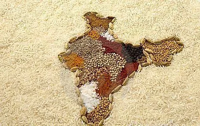
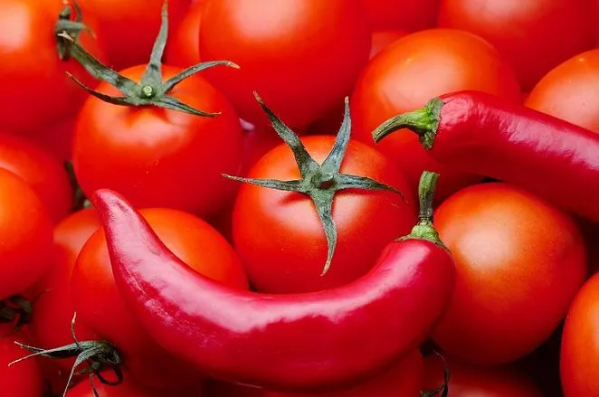
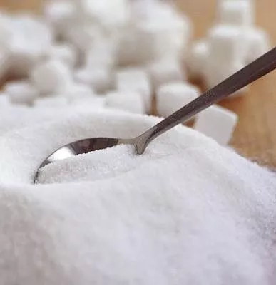
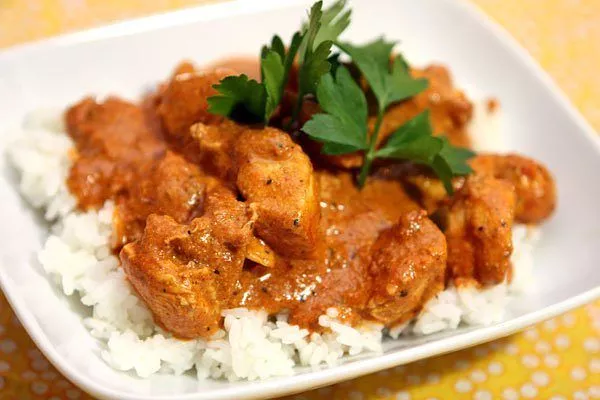
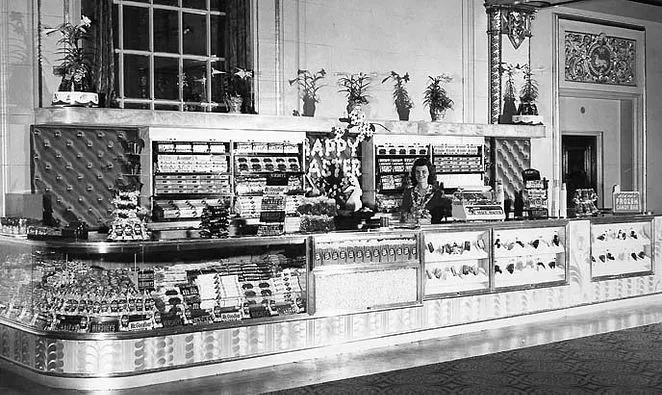
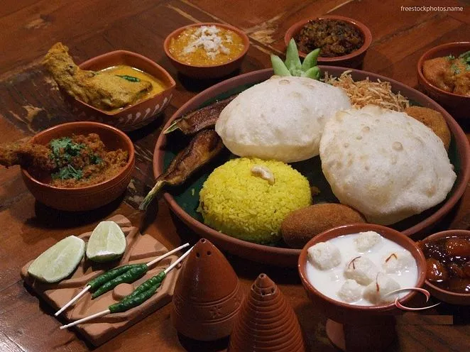
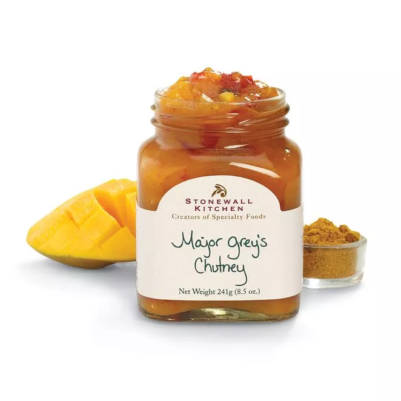
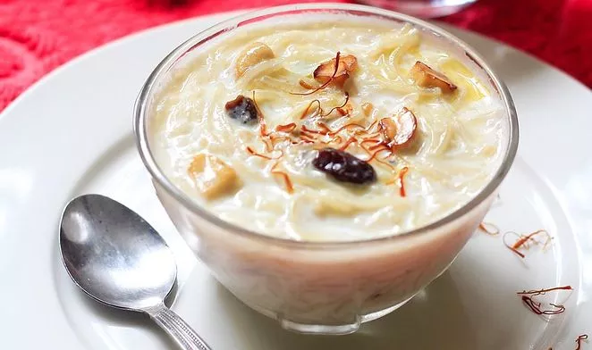

1.India is rightly called the Land of Spices. No country in the world produces as many varieties of spices as India.
Our Blog
10 Interesting Facts Related To Indian Food You Should Know
Food. Everyone loves it, everyone has it. Everyone even talks about it. Food is something we can talk about for hours and hours. You might know different dishes and their recipes. But how much do you know about the history of Indian food? Or how many Indian food-related facts are you aware of? Here are 15 interesting facts related to Indian food you might not know:

2. Greek, Roman and Arab traders have contributed a lot to the first foreign flavours in Indian cuisine. Who did you think brought the amazing saffron to India?

3. Staple ingredients of Indian cuisine like potato, tomato and chilli don't have Indian origin. They were brought to India by the Portuguese.

4. Not only this, the Portuguese also introduced us to refined sugar. Before that? Fruits and honey were used as sweeteners in Indian food.

5. Here comes a blow! Our very favourite Chicken Tikka Masala, a popular dish in India, is not Indian. It was invented in Glasgow, Scotland!

6. The first Indian restaurant in the USA was opened in the mid 1960s. Today, there are around 80,000 Indian restaurants in America.
7. Very little is known about the food and eating habits of the earliest Indian civilization, Indus Valley Civilization, because the ancient language has not been deciphered yet.

8. According to Indian Food Theory, our food has 6 different flavours: sweet, salty, bitter, sour, astringent and spicy.

9. Who doesn't like chutneys? Indian food is incomplete without this delicious side dish. But do you know the Britishers loved our chutneys as much as we do? In fact, they named one of the chutneys as 'Major Grey's'. It is still sold in India and is quite famous.

10. Mithais are an important part of Indian cuisine and celebrations. Payasam , one of the favourite sweet dishes of South India, is a must-serve at important ceremonies like weddings. According to South Indian tradition, a wedding is not over until Payasam is served.